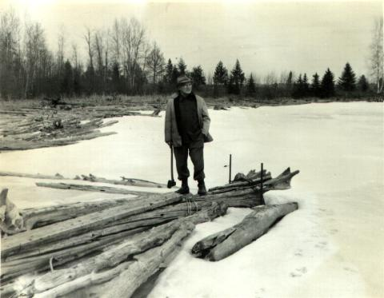

"A log jam on top of the Menominee River. A danger to power dams when everything melts." (Written by Charlotte nee WYSS CARR about this picture of her father, Lionel Wenzel WYSS taken in the 1950s).